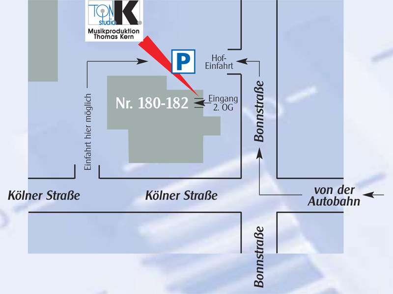

Anfahrt mit dem
Auto
Mit dem Auto von Süden (A 1):
Ausfahrt Frechen
im Kreuz Köln West, links auf die Dürener Str., unter der
Autobahn durch, nach ca. 250 m („Burger King“)
rechts in die Kölner Str., dieser folgen und nach 500 m an
der Ampel rechts in die Bonnstr. und direkt links in die
Hofeinfahrt.
Aus allen
anderen Richtungen (A 1 oder A 4):
Am Kreuz Köln West Richtung Koblenz, Ausfahrt Frechen.
Rechts ab auf die Dürener Str., nach ca. 250 m
(„Burger King“) rechts in die Kölner Str.,
dieser folgen und nach 500 m an der Ampel rechts in die
Bonnstr. und direkt links in die Hofeinfahrt.
Anfahrt mit öffentlichen Verkehrsmitteln
Vom Hauptbahnhof
mit der U-Bahn 2 Stationen in Richtung NEUMARKT (mehrere
Linien), dort nach oben gehen. Die Straßenbahn Linie 7
Richtung FRECHEN nehmen, bis zur Haltestelle FRECHEN
BAHNHOF (25min Fahrzeit).
Nach Ankunft bitte gegen die Fahrtrichtung schräg
zurückgehen auf die Kölner Str. (ca. 100m), noch weiter 100
m auf der Kölner Strasse gehen. Auf der anderen
Straßenseite finden Sie dann die Nr. 180, ein weißes
Treppenhaus, etwas von der Straße zurück in einem großen
weißen Block.
Link zu Google Maps
